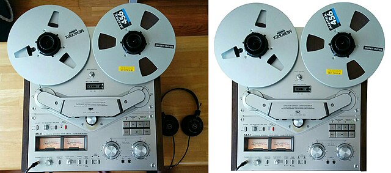

Welcome to our vintage recording equipment collection. We love reel-to-reel machines, ribbon microphones, and classic tube gear.
The Akai GX-635D brought a smooth, musical tone to countless sessions. Its transport and big VU meters feel like stepping back into a golden control room.
